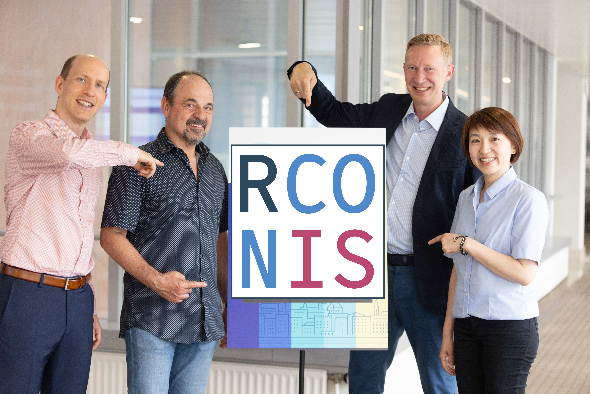
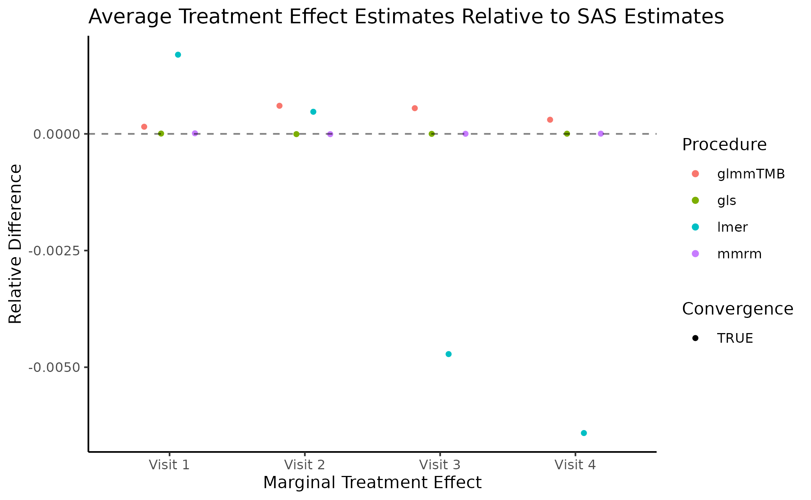

{mmrm} and more from openstatsware
Merck & Co., Inc., August 2024
Daniel Sabanés Bové
RCONIS
Agenda
- Personal introduction
- Introducing
openstatsware- Our software packages
- Our best practice materials
- Mixed Models for Repeated Measures and
{mmrm} - Ingredients for Successful Collaborations
Personal introduction
Daniel
- Ph.D. in Statistics from University of Zurich, Bayesian Model Selection
- Biostatistician at Roche for 5 years, Data Scientist at Google for 2 years, Statistical Software Engineer at Roche for 4 years
- Co-founder of RCONIS - we just had our 1st birthday!
- Multiple R packages on CRAN and Bioconductor, co-wrote book on Likelihood and Bayesian Inference, chair of
openstatsware - Feel free to connect
RCONIS
Idea
- Grow RPACT company to offer a wider range of services
- Strengthen maintainer team for the
rpactpackage - Team growth combined with scope growth
- Statistical consulting and engineering services:
Research Consulting and Innovative Solutions - Website: rconis.com
Introducing openstatsware
openstatsware
- Formed on 19 August 2022, affiliated with American Statistical Association (ASA) as well as European Federation of Statisticians in the Pharma Industry (EFSPI)
- Cross pharma industry collaboration (59 members from 38 organizations)
- Homepage at openstatsware.org
- We welcome new members to join!
Working Group Objectives
- Primary
- Engineer R packages that implement important statistical methods
- to fill in gaps in the open-source statistical software landscape
- focusing on what is needed for biopharmaceutical applications
- Engineer R packages that implement important statistical methods
- Secondary
- Develop and disseminate best practices for engineering high-quality open-source statistical software
- By actively doing the statistical engineering work together, we align on best practices and can communicate these to others
- Develop and disseminate best practices for engineering high-quality open-source statistical software
Bayesian MMRM R Package
- The
brms.mmrmR package leveragesbrmsto run Bayesian MMRMbrmsis a powerful and versatile package for fitting Bayesian regression models
- Support a simplified interface and align with the best practices
- Documentation website has a complete function reference and tutorial vignettes
- Rigorous validation using simulation-based calibration and comparisons with the frequentist
mmrmpackage on two example datasets
Matching-adjusted indirect comparison R package
maicplusis an R package to support analysis and reporting of matching-adjusted indirect comparison (MAIC) for HTA dossiers (docs)- Motivation:
- Sponsors are required to submit evidence of relative effectiveness of their treatment comparing to relevant comparators that may not be included in their clinical trial, for health technology assessment (HTA) in different countries
- MAIC is a prevalent and well-accepted method to derive population-adjusted treatment effect in such case for two trials, one of which has Individual patient data and the other has only aggregate data
- In close collaboration with HTA SIG in PSI/EFPSI (a group of HTA SMEs with statistical background, who help to generate pipeline ideas, ensure relevance of developed tools, pilot created tools in real business setting)
Bayesian Safety Signal Detection julia package
SafetySignalDetection.jlimplements Bayesian safety signal detection as proposed by Brock et al. (2023) using the Turing.jl framework.- Please have a look at the corresponding introduction to learn more
- If you are interested why Julia is interesting for implementing statistical software, check out R(omeo) and Julia: A Love Story
openstatsguide
- Small and concise set of recommendations for package developers
- Opinionated, but aims to be based on experienced majority opinions
- Focus are developers, while users might find complementary “validation” frameworks valuable
- Primarily for statistical packages (not plotting, data wrangling, etc.)
- Generic principles which can be used across functional data science languages R, Python, and Julia
- Concrete tools are mentioned as examples
Workshop Tour on Good Software Engineering
- 10th February 2023, Basel, CH
- 24th March 2023, Shanghai, CN
- 20th July 2023, San José, CA, US
- 26th September 2023, Rockville, MD, US
- 16th and 17th October 2023, Montreal, QC, CA
- 18th and 19th April 2024, Zurich, CH
- 8th July 2024, Salzburg, AT
- 8th April 2025, Tokyo, JP
- 12th August 2025, Philadelphia, PA, US
- 24th August 2025, Basel, CH
- 10th October 2025, Paris, France
Mixed Models for Repeated Measures and {mmrm}
What is a MMRM?
- MMRM is a popular choice for analyzing longitudinal continuous outcomes in randomized clinical trials
- For each subject \(i\) we observe a vector \[ Y_i = (y_{i1}, \dotsc, y_{im_i})^\top \in \mathbb{R}^{m_i} \]
- Use a design matrix \(X_i \in \mathbb{R}^{m_i \times p}\)
- Use a corresponding coefficient vector \(\beta \in \mathbb{R}^{p}\)
- Assume that the observations are multivariate normal distributed: \[ Y_i \sim N(X_i\beta, \Sigma_i) \] where the covariance matrix \(\Sigma_i \in \mathbb{R}^{m_i \times m_i}\) is derived by subsetting the overall covariance matrix \(\Sigma \in \mathbb{R}^{m \times m}\) appropriately
Covariance model and Estimation
- The symmetric and positive definite covariance matrix \(\Sigma\) is parametrized by a vector of variance parameters \(\theta = (\theta_1, \dotsc, \theta_k)^\top\)
- There are many different choices for how to model the covariance matrix and correspondingly \(\theta\) has different interpretations, e.g.:
- Unstructured, Toeplitz, AR1, compound symmetry, ante-dependence, spatial exponential
- Group specific covariance estimates and weights
- Estimation is performed
- (sometimes) via maximum likelihood (ML) inference, maximizing the joint log-likelihood of \((\beta, \theta)\) or
- (usually) via integrating out \(\beta\) from the likelihood and maximizing for \(\theta\) (restricted ML, REML)
Existing R Packages and Tried Solutions
- One challenge is that we need to use “adjusted” degrees of freedom for t- or F-test statistics
- because of the covariance parameter estimation and data sets are usually unbalanced
- Typical Satterthwaite or Kenward-Roger adjustment methods
- Initially thought that the MMRM problem was solved by using
lme4withlmerTest, learned that this approach failed on large data sets (slow, did not converge) nlmedoes not give Satterthwaite adjusted degrees of freedom, has convergence issues, and withemmeansit is only approximate- Next we tried to extend
glmmTMBto calculate Satterthwaite adjusted degrees of freedom, but it did not work
New Idea
- We only want to fit a fixed effects model with a structured covariance matrix for each subject
- The idea is then to use the Template Model Builder (
TMB) directly- as it is also underlying
glmmTMB - but code the exact model we want
- as it is also underlying
- We do this by implementing the log-likelihood in
C++using theTMBprovided libraries - Provide an R solution that
- has fast convergence times
- generates estimates closest to (previous) “gold standard” implementation (
SAS)
Advantages of TMB
- Fast
C++framework for defining objective functions (Rcppwould have been alternative interface) - Automatic differentiation of the log-likelihood as a function of the variance parameters
- We get the gradient and Hessian exactly and without additional coding
- Syntactic sugars to allow simple matrix calculations or operations like R
- This can be used from the R side with the
TMBinterface and plugged into optimizers
Why it’s not just another package
- Ongoing maintenance and support from the pharmaceutical industry
- 5 companies being involved in the funding, on track to become standard package
- Development using best practices as show case for high quality package
- Thorough and transparent unit and integration tests to ensure accurate results
- The integration tests in
{mmrm}are set to a tolerance of \(10^{-3}\) when compared to SAS outputs. - Uses the
testthatframework withcovrto communicate the testing coverage
Highlighted Features of mmrm
- Hypothesis Testing:
emmeansinterface for least square means- Satterthwaite and Kenward-Roger adjustments
- Robust sandwich estimator for covariance
- Integrations and extentions
tidymodelsbuiltin parsnip engine and recipes for streamlined model fitting workflowsteal,tern,rtablesintegration for post processing and reporting- Support conditional mean prediction and simulation
- Also used in
rbmifor conditional mean imputation!
Computational Efficiency
mmrm not only supports multiple covariance structure, it also has good efficiency (due to fast implementations in C++)
| Implementation | Median | First Quartile | Third Quartile |
|---|---|---|---|
mmrm |
56.15 | 55.76 | 56.30 |
PROC GLIMMIX |
100.00 | 100.00 | 100.00 |
lmer |
247.02 | 245.25 | 257.46 |
gls |
687.63 | 683.50 | 692.45 |
glmmTMB |
715.90 | 708.70 | 721.57 |
Differences with SAS
{mmrm} has small difference from SAS

Impact of mmrm
CRAN downloads: 3689 per month, over 100k in total so far (25th July 2025)
GitHub repository: 143 stars (25th July 2025)
Quite a lot of questions on StackOverflow
Most important features have been implemented by now … but still room for new features:
- additional random effects
- nested covariance structures
- Kenward-Roger version 2
Getting started
mmrmis on CRAN - use this as a starting point:
- Visit openpharma.github.io/mmrm for detailed docs including vignettes
- In particular the comparison vignette
- Consider tern.mmrm for high-level clinical reporting interface, incl. standard tables and graphs
Going beyond the MAR assumption
- Analyzing a primary outcome with MMRM will likely be critized by regulators regarding the required missing at random (MAR) assumption
- More complex methods have been developed to address this, such as reference-based multiple imputation (RBMI) or delta adjustment
- The
rbmipackage implements these methods, and internally usesmmrm:- Bayesian inference (with Stan implementation)
- approximate Bayesian multiple imputation combined with Rubin’s rules for inference, and
- frequentist conditional mean imputation combined with (jackknife or bootstrap) resampling.
Ingredients for successful and sustainable collaboration
Human factors
- Mutual interest and trust
- Prerequisite is getting to know each other
- Although mostly just online, biweekly calls help a lot with this
- Reciprocity mindset
- “Reciprocity means that in response to friendly actions, people are frequently much nicer and much more cooperative than predicted by the self-interest model”
- Personal experience: If you first give away something, more will come back to you.
Development process
- Important to go public as soon as possible
- don’t wait for the product to be finished
- you never know who else might be interested/could help
- Version control with git
- cornerstone of effective collaboration
- Building software together works better than alone
- Different perspectives in discussions and code review help to optimize the user interface and thus experience
Coding standards
- Consistent and readable code style simplifies joint work
- Written (!) contribution guidelines help
- Lowering the entry hurdle using developer calls is important
Robust test suite
- Unit and integration tests are essential for preventing regression and assuring quality
- Especially with compiled code critical to see if package works correctly
- Use continuous integration during development to make sure nothing breaks along the way
Documentation
- Lots of work but extremely important
- start with writing up the methods details
- think about the code structure first in a “design doc”
- only then put the code in the package
- Needs to be kept up-to-date
- Need to have examples & vignettes
- Testing alone is not sufficient
- Builds trust with users
- Reference for developers over time
Acknowledgments
Thanks to all other authors of {mmrm}:
- Brian Matthew Lang (MSD)
- Christian Stock (Boehringer)
- Dan James (AstraZeneca)
- Daniel Leibovitz (Roche)
- Daniel Sjoberg (Roche)
- Doug Kelkhoff (Roche)
- Julia Dedic (Roche)
- Jonathan Sidi (Sanofi)
- Kevin Kunzmann (Boehringer)
- Liming Li (Roche)
- Nikolas I. Krieger (Experis)
- Ya Wang (Gilead)
Acknowledgments
Thanks for discussions and contributions from:
- Ben Bolker (McMaster University)
- Davide Garolini (Roche)
- Craig Gower-Page (Roche)
- Dinakar Kulkarni (Roche)
- Gonzalo Duran Pacheco (Roche)
- Lukas A. Widmer (Novartis)
- Members of
openstatsware
Thank you! Questions?


These slides are at danielinteractive.github.io/merck-mmrm
{mmrm} and more from openstatsware | License